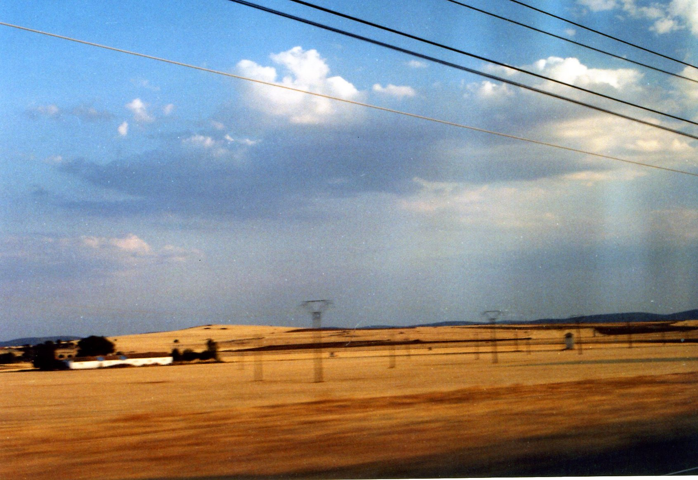
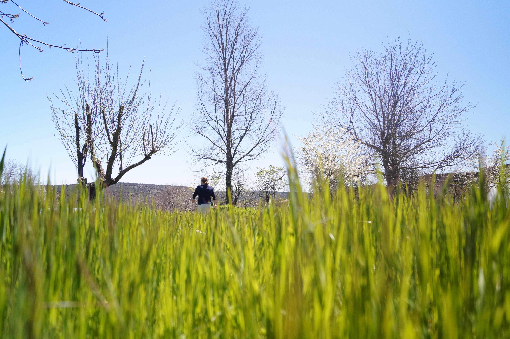
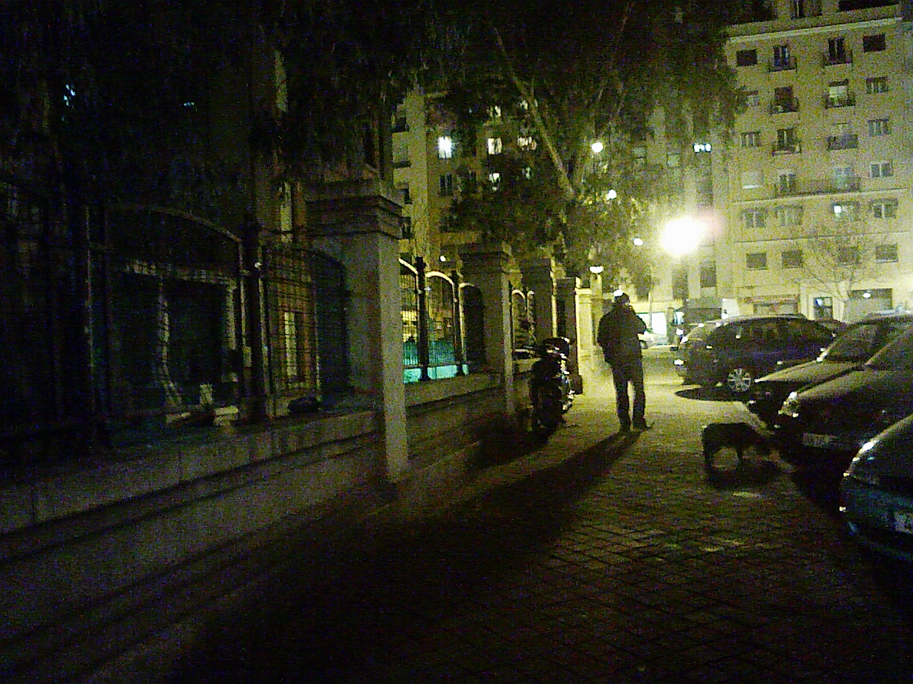
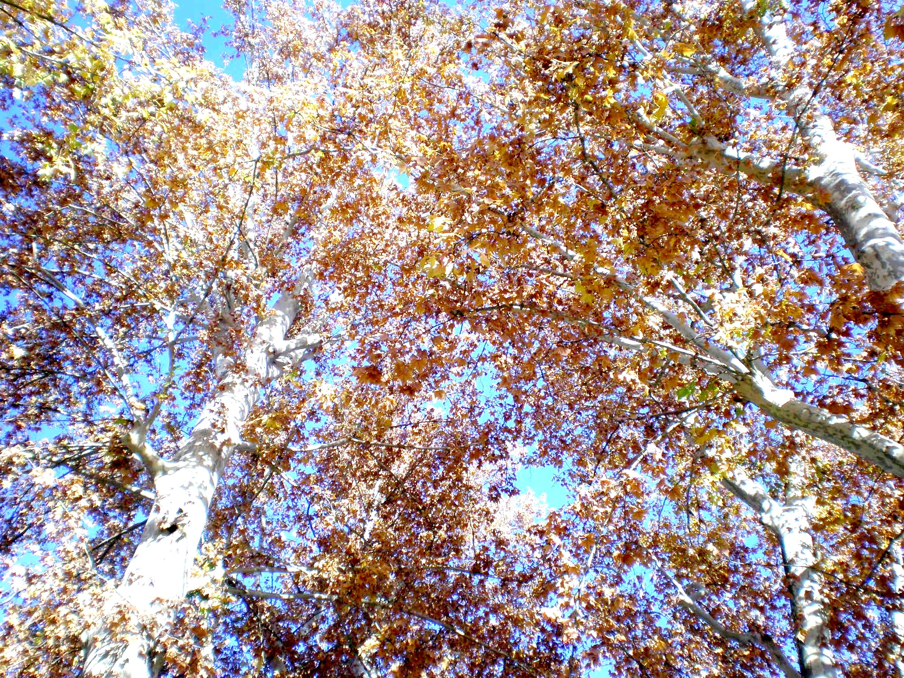
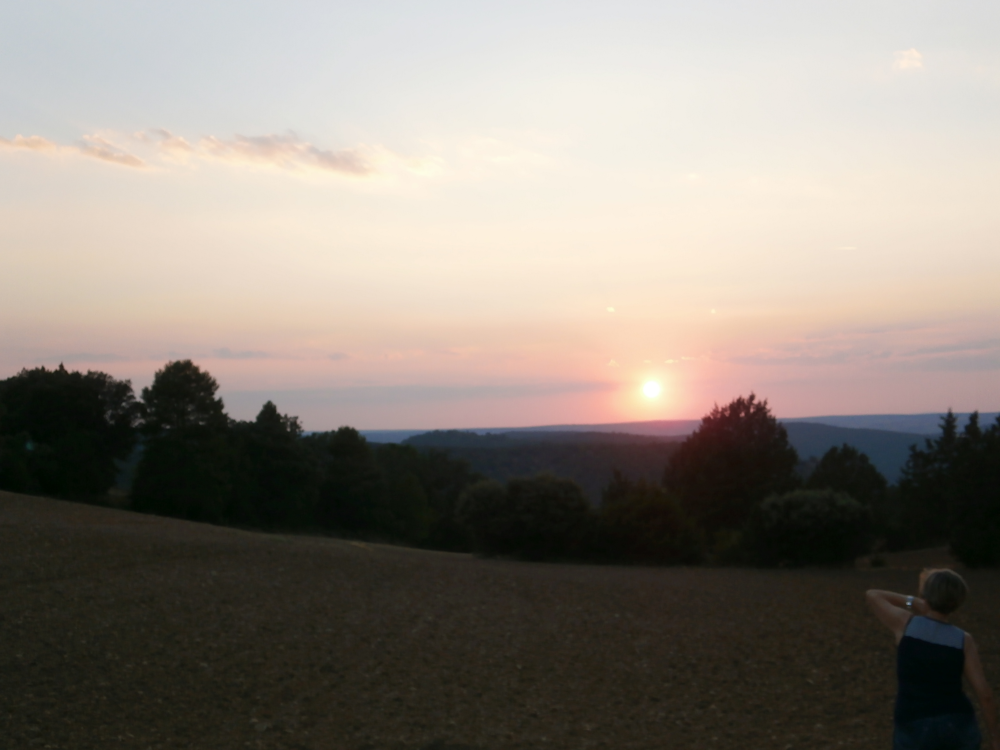
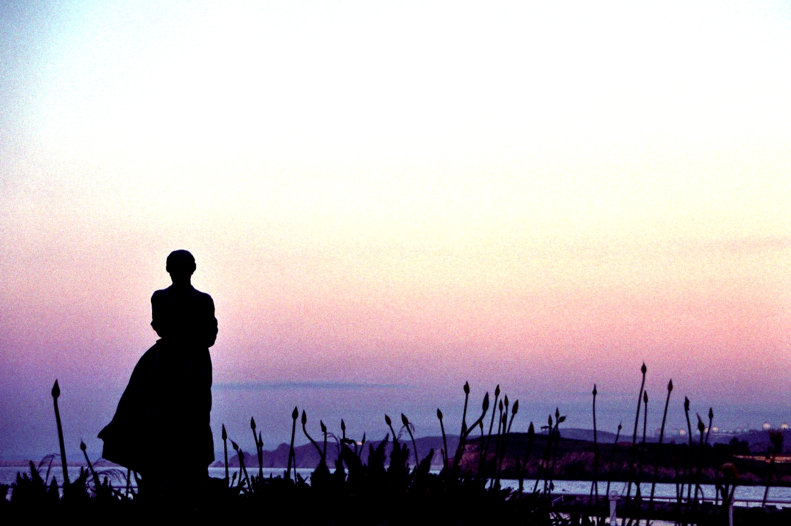

Algunas fotografías que me gustan, que he captado y que quiero compartir
Fotografía
La fotografía es una de mis pasiones, quizá la que menos tiempo le puedo dedicar, pero que sé que me acompañará forever. Como se trata de un portfolio en este caso solo mostraré imágenes creadas por mi (Instagram aparte) y en este apartado no hablaré sobre los fotógrafos que me han inspirado, aún lo hacen, y la relación entre entre la fotografía y el cine. I hope you enjoy it
Galería







